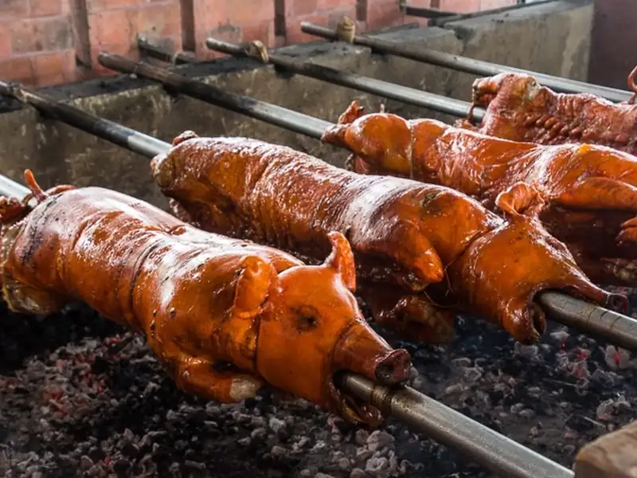

Premier Choice ₱200–500 / portionCebu City & Talisay
Lechon Cebu
Description
A whole pig meticulously slow-roasted over a charcoal pit. The interior is generously stuffed with aromatics including lemongrass, scallions, and crushed garlic, resulting in an exceptionally flavorful dish that requires no additional sauces.
Flavor Profile
Characterized by its shatteringly crisp exterior, the meat is succulent and heavily infused with a distinct herbaceous and savory essence. The prominent notes of lemongrass provide a bright contrast to the rich pork fat.
Recommended Locations
CnT Lechon in Talisay for a traditional experience, Rico's Lechon for accessibility, and House of Lechon for an upscale dining atmosphere. Best enjoyed fresh before the afternoon rush.
Dining Note: To ensure the highest quality cuts and the crispiest skin, it is highly recommended to visit establishments before midday.